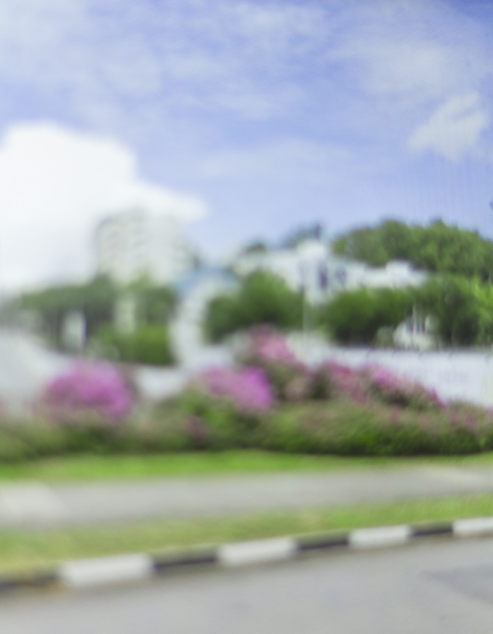

Photos of national flower.




Singapore as “garden city” is a vision that has been ongoing for more than half a century since 1967. This was another of MM Lee Kwan Yew's legacy - to manicure our island into a neat tapestry of plants with low maintenance and high visual impact.
The first part of this ongoing series takes an affectionate look at the bougainvillea plant and how things are in Singapore's landscape. With all its qualities and prominence, can the bougainvillea be our "national flower"?
Get your copy of national flower here.
Photos of national flower.